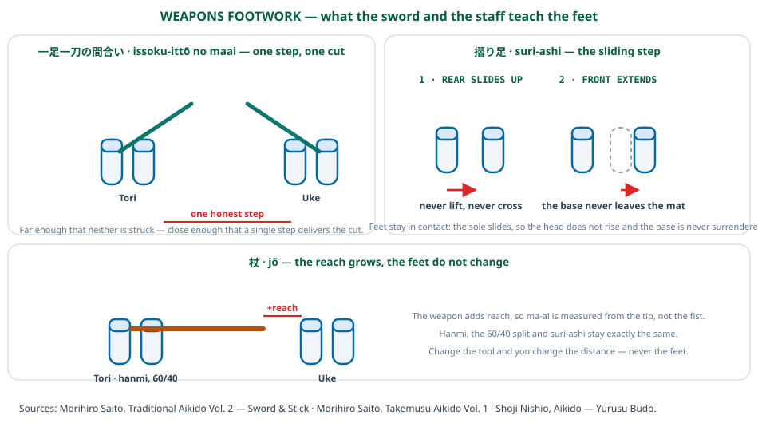

Bộ pháp vũ khí
Các tập kiếm và gậy của Saito là tài liệu bộ pháp nghiêm ngặt nhất trên giá sách, và lý do giản dị: một thứ vũ khí làm cho các lỗi trở nên đọc được. Với tay không, một bước cẩu thả có thể được che giấu bởi một bạn tập dễ tính. Với kiếm, khoảng cách hoặc đúng hoặc nhát chém không tới, và đôi bàn chân là thứ duy nhất có thể sai. Bài này lấy ba bài học mà phần vũ khí nêu ra một cách minh thị.

Vì sao tập bộ pháp với vũ khí
Các bài vũ khí không phải một chủ đề tách biệt với aikido tay không trong các nguồn này; chúng là cùng tài liệu với dung sai bị gỡ bỏ. Phần kiếm-và-gậy của Saito dùng cùng hanmi, cùng các thế đối diện và cùng nhập thân và xoay chuyển mà các kỹ thuật tay không dùng. Điều thay đổi là vũ khí không tha thứ cho một bước sai.
Điều đó làm cho phần vũ khí thành bài kiểm tra trung thực của bộ pháp được dạy trong phần còn lại của loạt bài. Nếu bước đúng thì kỹ thuật có đó; nếu không, không một sự khéo léo nào của nửa thân trên cứu được.
Một bước, một nhát
Khoảng cách kiếm cổ điển là issoku-ittō no maai — một bước, một nhát chém. Nó là khoảng hở mà tại đó một bước cam kết duy nhất đưa nhát chém tới đích, và nó vừa là khoảng cách an toàn gần nhất vừa là khoảng cách hữu dụng xa nhất.
Cách đọc về bộ pháp là khoảng cách được định nghĩa bằng một bước thay vì được đo một cách độc lập. Bạn không nhìn khoảng hở rồi quyết định; bạn đặt mình sao cho một bước của bạn vừa khít bắc qua nó. Đây là cùng ý tưởng với ma-ai đếm bằng bước, được làm nghiêm ngặt hơn: với vũ khí thì trong đó đúng một bước, không phải “một hoặc hai”.
Suri-ashi: bước lướt
Chuyển động dùng để vượt qua khoảng hở ấy là suri-ashi, bước lướt. Lòng bàn chân giữ tiếp xúc với mặt chiếu; bàn chân lướt thay vì nhấc. Bàn chân sau lướt lên phía bàn chân trước, rồi bàn chân trước duỗi ra — không bao giờ ngược lại, và không bao giờ để đôi bàn chân bắt chéo.
Tại sao lướt thay vì một bước nhấc: một bàn chân nhấc nghĩa là đầu nhô lên và nền tảng tức thời biến mất, cả hai đều bị vũ khí trừng phạt. Lướt giữ chiều cao không đổi và giữ một bàn chân chịu tải suốt. Đó là cùng yêu cầu mà Thái Cực nêu là “xoay trên một chân, đừng bao giờ trượt trên hai” — ở đây được diễn đạt như một chỉ dẫn tích cực là giữ tiếp xúc thay vì một điều cấm.
Tầm với thay đổi, đôi bàn chân không
Thay kiếm bằng gậy (jō) và khoảng cách lớn thêm chiều dài của vũ khí. Nhưng thế đứng, tỷ lệ trọng lượng và bước lướt không đổi. Các nguồn nhất quán về điều này: công cụ thay đổi nơi cuộc giao chiến xảy ra, không phải cách thân thể tới đó.
Đó là phát biểu có thể chuyển giao. Ma-ai được đo từ mũi của thứ bạn đang cầm, và đôi bàn chân làm cùng một việc bất kể. Người chơi hiểu điều này tách ra hai thứ thường bị gộp lẫn — tầm với và bộ pháp — và có thể điều chỉnh một thứ mà không làm xáo trộn thứ kia.
Trên sân
1. Dùng phiên bản nghiêm để kiểm phiên bản lỏng. Nguyên lý vũ khí — gỡ bỏ dung sai và xem bộ pháp có còn hoạt động không — là một thiết kế tốt cho tập luyện. Một bài tập trong đó một bước muộn đơn giản là thất bại đáng giá hơn bài mà một cú giao bóng dễ tính che giấu lỗi.
2. Định vị trí bằng một bước. “Một bước, một nhát chém” có một tương tự trực tiếp: đặt mình sao cho một bước hồi phục đưa bạn tới đúng quả bóng. Vị trí được phát biểu theo những từ ngữ ấy có thể kiểm chứng, theo cách mà “đứng lùi lại một chút” thì không.
3. Giữ tiếp xúc, giữ chiều cao. Nội dung thực của bước lướt là nền tảng không bao giờ bị buông. Trên sân, đó là lập luận cho một bước điều chỉnh thấp và liền lạc thay vì một cú nhảy, và đó là lý do cái đầu giữ ngang trên một quả bóng được chơi tốt.
Sách nguồn
Morihiro Saito, Traditional Aikido Tập 2 — Kiếm & Gậy — hanmi, gyaku- và ai-hanmi, và các bài vũ khí xây trên cùng bộ pháp: aikido_saito_sword_stick_v2_vi
Morihiro Saito, Takemusu Aikido Tập 1 — cùng thế đứng và cùng bước trong phần tay không: aikido_takemusu_vol1_vi
Đối chiếu với Aikido — Võ Đạo Của Sự Chấp Nhận của Shoji Nishio về vũ khí và nhập thân: aikido_nishio_yurusu_budo_vi
Mọi trích dẫn được dịch từ bản dịch tiếng Việt của các ấn bản này. Hình minh họa là tác phẩm gốc làm cho Dự án Nghiên cứu Bộ pháp TFL.
← Ma-ai và De-ai - Khoảng cách và thời điểm, cả hai do đôi bàn chân quyết định | Dự án nghiên cứu TFL